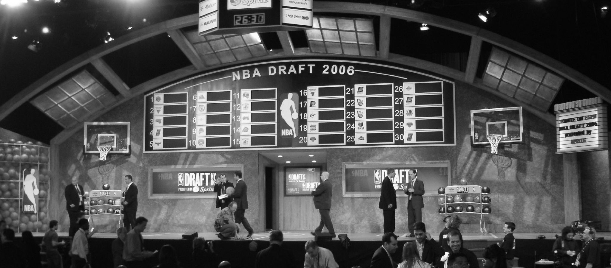
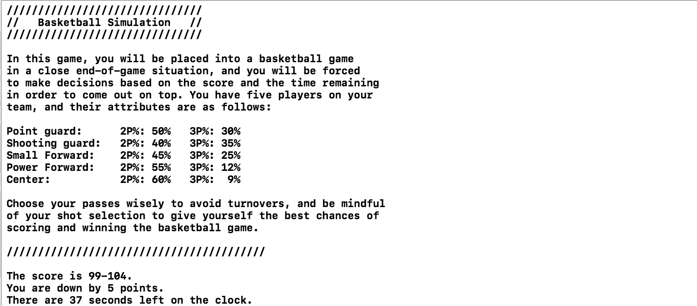
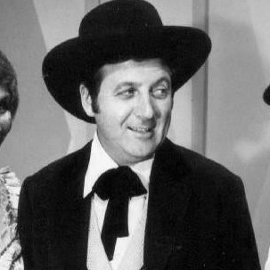

Projects

Raspberry Pi Arcade

NBA Draft Analysis

Basketball Simulation

Hi, I’m Matthew Schmitz, an Honours Biomedical Sciences student at the University of Waterloo. On this site you’ll find links to my past and ongoing projects, my resume, my blog articles, and a little bit about me.
I am a huge fan of hip-hop, the NBA, and casual programming, but as I write this I don't know whether the content of my site will evolve to reflect that. I imagine my site will become somewhat of a space to share the projects I have on the go and the ones that I have completed, as well as share some of my thoughts and feelings on topics I find interesting. This site was coded by myself, and I intend to stick with the simple design that you see now.
To provide you with a brief introduction, I am a very passionate learner who has always welcomed and embraced challenges. I have always performed well in school, and I continued that trend in my first year of university at the University of Waterloo where I studied Systems Design Engineering. I finished my first term in the class's 97th percentile, and proceeded to work at LOGiQ3 in Toronto as a Systems Developer for my first Co-op work term from January to April of 2017. I realized, however, that I was not enjoying the core engineering courses as much as I had expected to, and I found myself missing the science material that had so easily captured my interest in high school. For this reason, I decided to make the decision to switch to the Biomedical Sciences program, beginning in September of 2017. As I write this, I have not yet begun my studies in the new program, but I am looking forward to getting back to school in September. I cannot wait to see what opportunities arise in my new program.